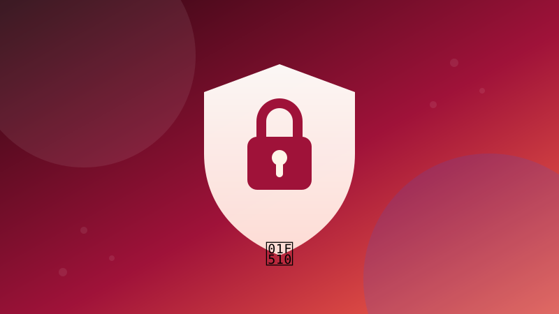

🔐 SecurityLokale wachtwoordkluis
Bewaar geheimen versleuteld in een lokaal bestand.
Speel dit idee opent de app en voert het volledige programma meteen uit. Je voortgang wordt lokaal in je browser bewaard.
1 Waar gaat dit over?
Je leert sleutelafleiding met PBKDF2, versleuteling met een keystream en veilig opslaan. Dit is een leerproject, geen productiekluis.
2 Wat leer je?
pbkdf2xorjsonencryptie
3 Stap voor stap
Stap 1
Leid een sleutel af
De master password wordt nooit opgeslagen; alleen de salt.
python
import hashlib
import secrets
def maak_sleutel(master, salt, lengte=32):
return hashlib.pbkdf2_hmac(
"sha256", master.encode(), salt, 200_000, dklen=lengte
)
Stap 2
Maak een keystream
Voor een leerproject kun je een eenvoudige XOR-keystream gebruiken.
python
def keystream(sleutel, lengte):
return hashlib.shake_256(sleutel).digest(lengte)
Stap 3
Versleutel tekst
XOR de bytes van de tekst met de keystream.
python
import base64
def versleutel(tekst, sleutel):
data = tekst.encode()
stream = keystream(sleutel, len(data))
return base64.b64encode(bytes(a ^ b for a, b in zip(data, stream))).decode()
Stap 4
Ontsleutel tekst
Dezelfde bewerking draait XOR weer terug.
python
def ontsleutel(geheim, sleutel):
data = base64.b64decode(geheim)
stream = keystream(sleutel, len(data))
return bytes(a ^ b for a, b in zip(data, stream)).decode()
Stap 5
Sla de kluis op
Bewaar alleen salt en versleutelde gegevens in JSON.
python
import json
salt = secrets.token_bytes(16)
sleutel = maak_sleutel("mijn-lange-master", salt)
kluis = {"salt": salt.hex(), "items": [versleutel("geheim", sleutel)]}
with open("kluis.json", "w", encoding="utf-8") as bestand:
json.dump(kluis, bestand)
Stap 6
Waarschuw de gebruiker
XOR met een zelfgemaakte keystream is niet bestand tegen echte aanvallen.
python
print("Leerproject: gebruik voor echte geheimen een bewezen tool.")4 Tips
- Verlies je master password niet: er is geen herstel.
- Gebruik voor productie een bibliotheek zoals cryptography of een echte wachtwoordmanager.